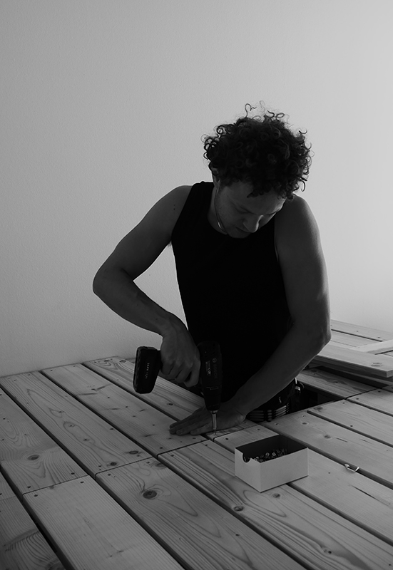

Mein Name ist Soïc Kermarrec, ich bin 2004 in Leipzig geboren
und lebe und arbeite in dieser Stadt als Künstler und
Architekturstudent.
In meiner Jugend wollte ich den großen Mangaka nacheifern
und kam so zur Grafik mit Tinte und Feder. Als ich 2025
nach Paris zog, fing ich an, meine Eindrücke und
Erlebnisse in Farben auf die Leinwand zu bannen, was zu
meinem jetzigen Werk führt.
Ich arbeite intuitiv und stelle mit Tinte und Acryl, verschiedenen Fragmenten und Schrift Abhängigkeiten zwischen den einzelnen Elementen her. So entstehen visuelle Eindrücke, in denen sich komplexe und manchmal zufällige Zusammenhänge unserer subjektiv wahrgenommenen Realität widerspiegeln.
Vita
2023
AbiBac, Anton-Philipp-Reclam-Gymnasium, Leipzig
2023 – 2026
B.A. Architektur, HTWK Leipzig
2025 – 2026
Auslandsstudium ENSA PVS, Paris
2026
Ausstellung 8qm Paris
2026
Ausstellung 1+1+1